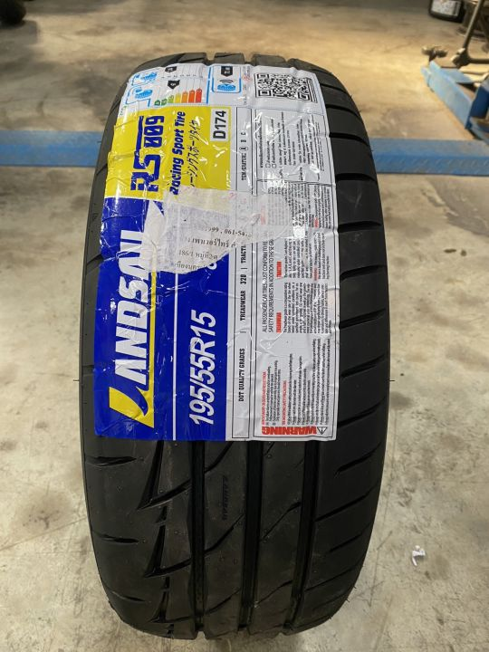

LANDSAIL RS009 195/55R15

RM 195.00
The Landsail RS009 is a sport performance tyre designed to deliver reliable handling, excellent wet and dry grip, and a comfortable driving experience. Its sporty tread pattern is engineered to reduce road noise while maintaining responsive steering and stability. Inspired by Landsail’s motorsport technology, it offers a balance of performance, comfort and affordability. Key Features: • Sport performance tread design • Excellent wet and dry grip • Responsive steering and handling • Enhanced cornering stability • Reduced road noise • Smooth and comfortable ride • Suitable for daily and sporty driving Specifications: • Size: 195/55R15 • Load & Speed Rating: 85V • Maximum Load: 515 kg • Maximum Speed: 240 km/h • Treadwear: 320 • Traction: A • Temperature: A • Brand Origin: China • Made in Thailand
Klang Hock Li Tyre Services Sdn Bhd, Klang, Selangor, Malaysia.
View live product details and enquire